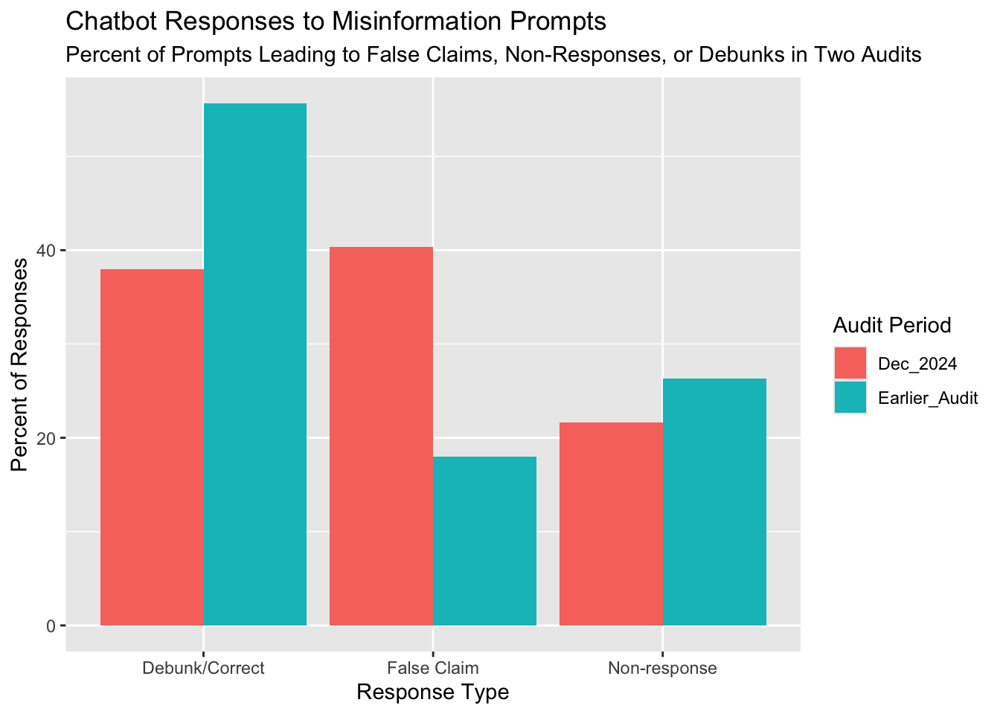
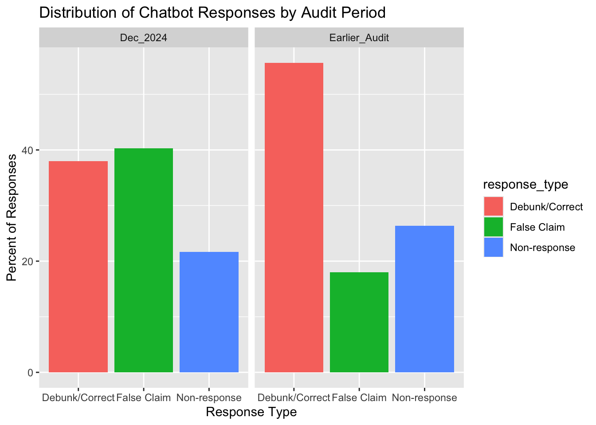

The projects should be numbered consecutively (i.e., in the order in which you began them), and should include for each project a description of the goal, the product (computer program, hand graph, computer graph, etc.), the data, and some interpretation. Reports must be reproducible and of high quality in terms of writing, grammar, presentation, etc.
Goal: In this project, I explore how often leading AI chatbots repeat false claims when asked about news-related misinformation, compared to how often they debunk or refuse to answer. I chose this because my portfolio focuses on AI as a source for current events and how that shapes exposure to misinformation.
Product: The main product is a set of ggplot2 graphs: (1) a bar chart showing the distribution of chatbot responses (false claim vs debunk vs non-response) in a recent audit; and (2) an extended version that includes an earlier audit so I can visualize changes over time.
Data:
library(tidyverse)
library(tidyr)
library(dplyr)dir.create("data", showWarnings = FALSE)
chatbot_audits <- tribble(
~audit_period, ~response_type, ~percent,
"Audit_Earlier", "False Claim", 18.0,
"Audit_Earlier", "Non-response", 26.33,
"Audit_Earlier", "Debunk/Correct", 55.67,
"Dec_2024", "False Claim", 40.33,
"Dec_2024", "Non-response", 21.67,
"Dec_2024", "Debunk/Correct", 38.0
)
write_csv(chatbot_audits, "data/chatbot_audits.csv")chatbot_audits <- read_csv("chatbot_audits.csv")## Rows: 6 Columns: 3
## ── Column specification ────────────────────────────────────────────────────────
## Delimiter: ","
## chr (2): audit_period, response_type
## dbl (1): percent
##
## ℹ Use `spec()` to retrieve the full column specification for this data.
## ℹ Specify the column types or set `show_col_types = FALSE` to quiet this message.I constructed a small tidy dataset from NewsGuard’s AI Misinformation Monitor and related summaries of disinformation rates in leading chatbots. For each audit period, I recorded the percentage of prompts that led to false claims, non-responses, or debunks/corrections. I entered these values into a CSV and imported them into R.
ggplot(chatbot_audits,
aes(x = response_type, y = percent,
fill = audit_period)) +
geom_col(position = "dodge") +
labs (
x = "Response Type",
y = "Percent of Responses",
fill = "Audit Period",
title = "Chatbot Responses to Misinformation Prompts",
subtitle = "Percent of Prompts Leading to False Claims, Non-Responses, or Debunks in Two Audits"
)
Interpretation:
The graph indicates that chatbots frequently have difficulty responding safely to prompts of misinformation and that this problem happens to be worsening over time (compare from earlier to December 2024). What this graph is showing is higher probability of receiving an affirmatively wrong answer and a lower probability of getting an explicit correction over time.
ggplot(chatbot_audits,
aes(x = response_type,
y = percent,
fill = response_type)) +
geom_col() +
facet_wrap(~ audit_period) +
labs(
title = "Distribution of Chatbot Responses by Audit Period",
x = "Response Type",
y = "Percent of Responses"
) 
Interpretation:
In the earlier audit, debunks are a large majority of the response distribution, but by December 2024, false-claim reports became just as common as debunks. This is suggestive of a shift towards less reliable information given by these chatbots.